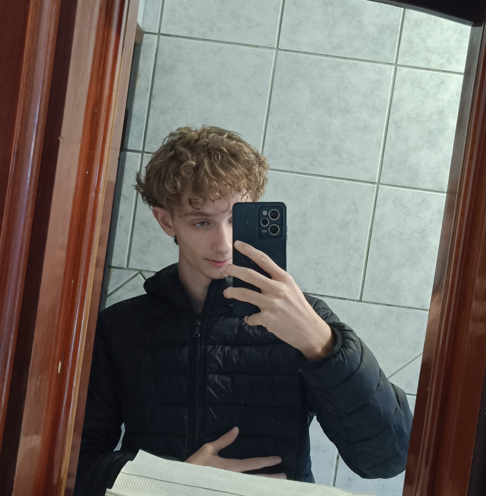
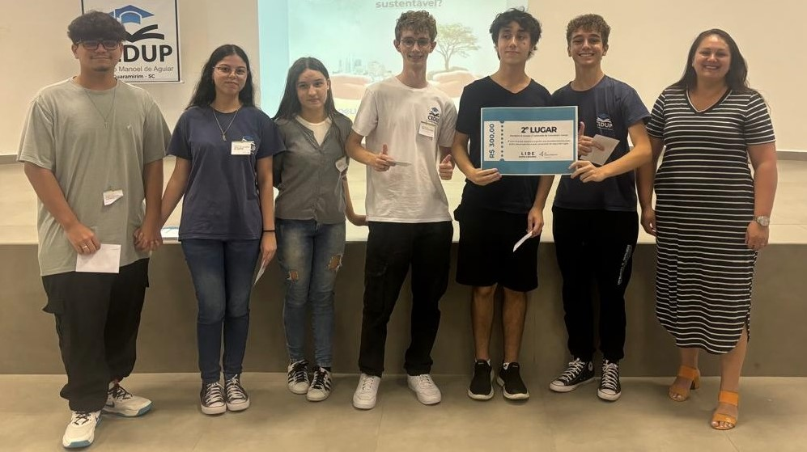
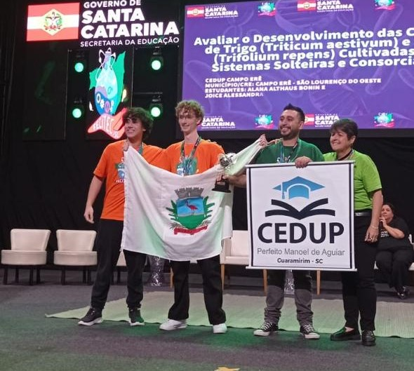
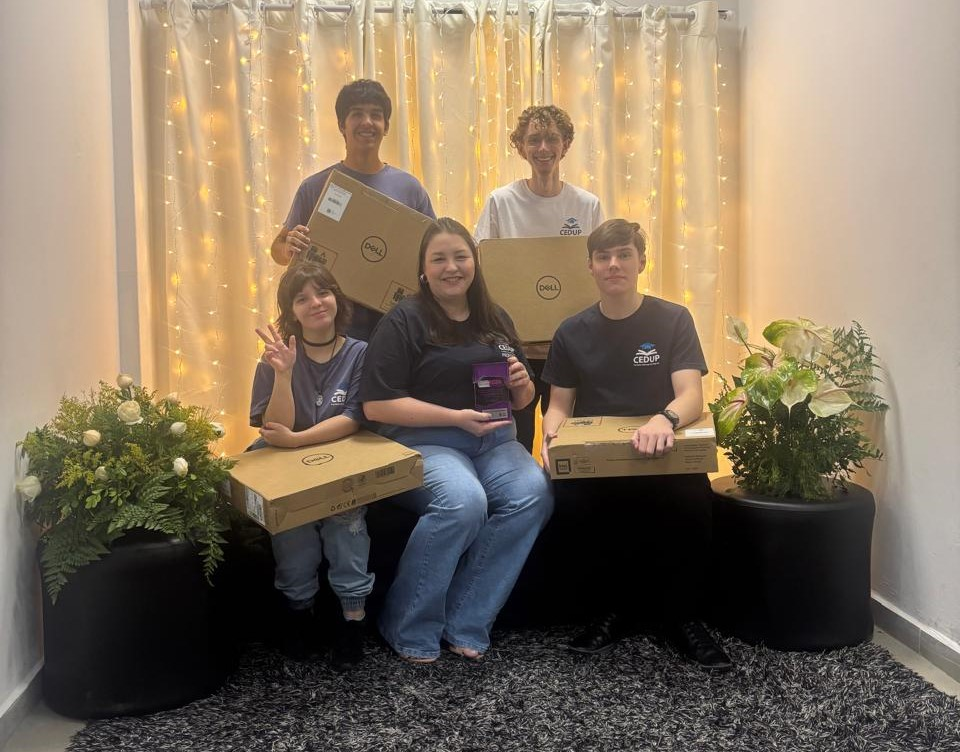
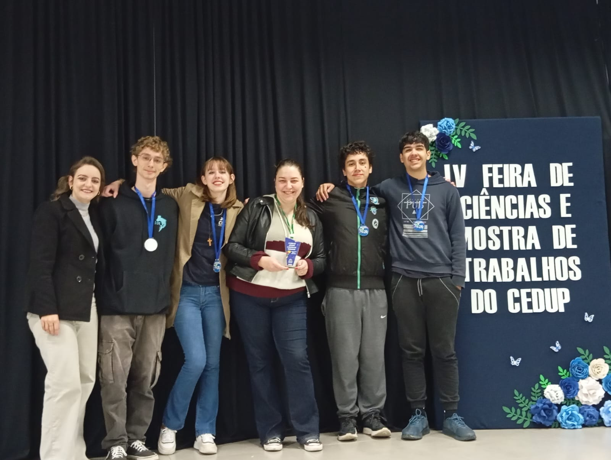
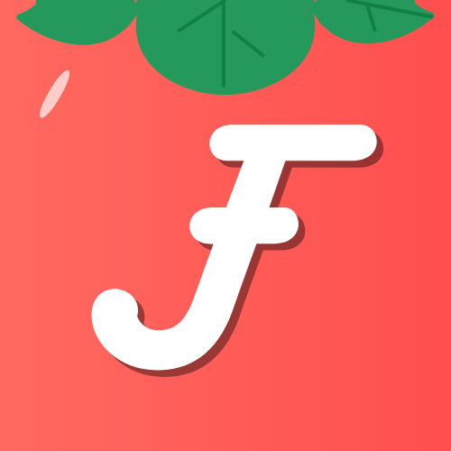

José Vitor Mader

Perfil Profissional
[REGISTRO ATUAL] Analista de Suporte N2 e N3 na Agricopel
Atuação direta na retaguarda técnica de infraestrutura de TI, gerenciamento avançado de servidores, ajuste e resolução de consultas em bancos de dados e desenvolvimento de rotinas lógicas customizadas em ADVPL.
Formação em andamento em Engenharia de Software na Católica de Santa Catarina, combinando teoria e a vivência severa de sistemas corporativos de alta exigência.
Especialidades técnicas consolidadas em JavaScript, HTML, CSS, SQL, Python, ADVPL e infraestrutura de dados.
Minhas Conquistas Recentes
[CH. 01] 1º Lugar - Feira Interna
O projeto "Tá na Medida" levou o topo da feira escolar, focando em inteligência de dados aplicada à sustentabilidade alimentar.
[CH. 02] 2º Lugar - Innovation Camp JA Brasil

Maratona focada em soluções disruptivas e aplicabilidade mercadológica real.
[CH. 03] 2º Lugar - XXVI FECITEC

Reconhecimento estadual de peso científico, técnico e de impacto social para a região.
[CH. 04] 1º Lugar - Desafio Vivo (Nacional)

Competição de nível nacional premiando o modelo superior de análise inteligente e IA.
[CH. 05] Credenciamento Regional

Seleção oficial para representar o polo escolar na feira regional de tecnologia.
Meus Projetos
Tá na Medida
Ecossistema inteligente focado no combate ao desperdício de mantimentos em redes escolares públicas através de predição estatística.
- Análise preditiva de consumo
- Otimização de porções com IA
- Dashboard administrativo
Fuuto - Gestão de Alimentos

Plataforma premiada nacionalmente (1º Lugar Vivo Data Challenge) que utiliza visão computacional e inteligência artificial para reestruturar a logística de mantimentos escolares em SC.
Portal CEDUP

Reestruturação completa da página oficial institucional do CEDUP Perfeito Manoel de Aguiar. Foco em robustez, responsividade e painel de controle.
Techs: PHP, MySQL, JS, CSS
UniCEDUP - Grêmio

Desenvolvimento da interface interativa de campanha e propostas da chapa estudantil.
Techs: React, Next.js, Vercel